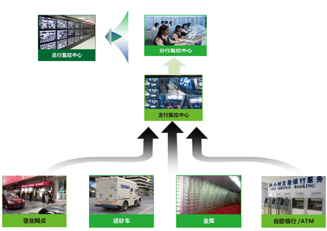
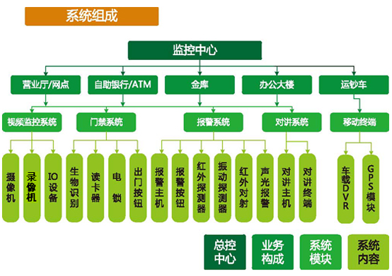

一、系统概述
银行金融行业属于国家重点安全防范单位，为高风险保护对象，具有规模多样化、现金流量大、出入人员复杂、重要设施繁多、管理范围广等特点，作为货币的主要流通场所、国家经济运作的重要环节，以其独特的功能和先进的技术广泛服务于全国各地，是安全防范的前沿阵地。随着银行金融行业的发展和不断变化，必须建立一套切实有效的安防监控系统全面加强和完善现有的银行金融安全防范系统，以适应行业机制和业务快速发展，其中安全已经属于国家战略高度。
金融行业安全防范系统包含营业网点安全防范、自助银行/ATM安全防范、金库安全防范等，整体融合视频监控、报警系统、对讲系统、门禁系统等多个系统，结合智能分析，并由综合管控平台统一进行管控，通过可靠的系统集成平台多级联网架构实现全方位安全防范管理。

二、系统整体架构

如上图所示：该子系统主要包含：视频监控子系统，门禁系统，报警系统，对讲系统等。
前端信号摄取部分是整个系统的“眼睛”，它把监视的内容转成图像信号传送至控制中心的显示系统，摄像部分的好坏及它产生的图像信号质量将决定整个系统的质量。
信号传输部分是视频图像和数据的传输通道，是整个系统功能模块实现的重要桥梁。中心控制部分是整个系统的“心脏”和“大脑”，是实现整个系统功能的指挥中心，包括图像显示、视频记录、前端控制、报警处理、系统级联、远程访问、系统管理等等内容。
三、系统整体特点
1．强大的系统接入能力与实时监控
系统能够接入多路大量的摄像机，中心可实时监控前端设备，并且保证系统长时间稳定可靠运行。
2．分布式多级系统架构
系统采用分布式分级设计,支持多级监控中心设置,系统采用模块化设计，可以任意增加和减少功能；具备自动升级、故障自动恢复功能。
3．强大的系统兼容性
系统能够兼容多品牌IPC、DVR/DVS、NVR和各类型报警主机。
4．多级流媒体转发图像及码流设计
具有流媒体控制及转发功能，多用户访问同一视频源时可以进行视频复制转发图像，节省网络资源,有自适应带宽码流大小控制。
5．网点图像上传及电视墙显示管理
图像采用轮巡的方式切换画面在电视墙显示，电视墙显示具有图像可配置及切换时间可配置的显示策略。
6．多用户并发访问带宽负载平衡
在多用户并发访问时，为了保证多用户并发访问的图像效果清晰，实时，系统软件具有视频转发服务功能，减轻带宽负载。
7．报警信息处理与远程控制
实现所有网点的报警模块获取探头报警信息后，向上级监控中心上传报警信息，各监控中心可以对其辖内的网点报警主机进行远程撤防，布防，报警复位等操作。
8．语音喊话 与双向语音对讲
系统支持对任意网点进行采用“中心呼叫网点”方式实施语音喊话和双向语音对讲，同时各级监控中心也可以实现音视频的单独或会议式可视对讲方式，为紧急事件处理，综合办公需求提供快速的现场会议条件。
9．远程设备管理
系统支持设备的远程开关机和重启，远程参数设置，支持远程设备排障。
10．访问权限与安全
系统针对不同的用户划分不同的使用权限，各用户不能越级越权查看权限外的镜头画面。
11．资料回放及下载
系统支持远程实时查看各网点监控图像及调阅历史录像资料，并实现资料下载保存、图像抓拍、打印输出等功能。
12．电视墙管理
中心设置电视墙，设置每组画面轮巡显示，多画面任意切换，必要时，可将实时监控图像、回放图像，投送到电视墙，以便分析处理。
13．时间同步
所有主机同管理服务器同步校时，保证整个监控系统时间的统一性。
14．事件日志
对用户访问，报警事件，异常事件等不同类型事件有日志记录功能。
15．电子地图
能方便加载全局电子地图、加载各个网点的营业厅，离行式ATM和自助银行、金库平面结构图。